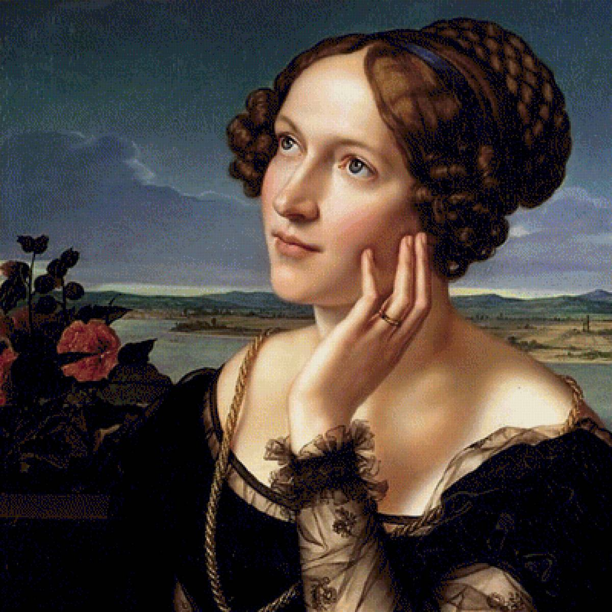
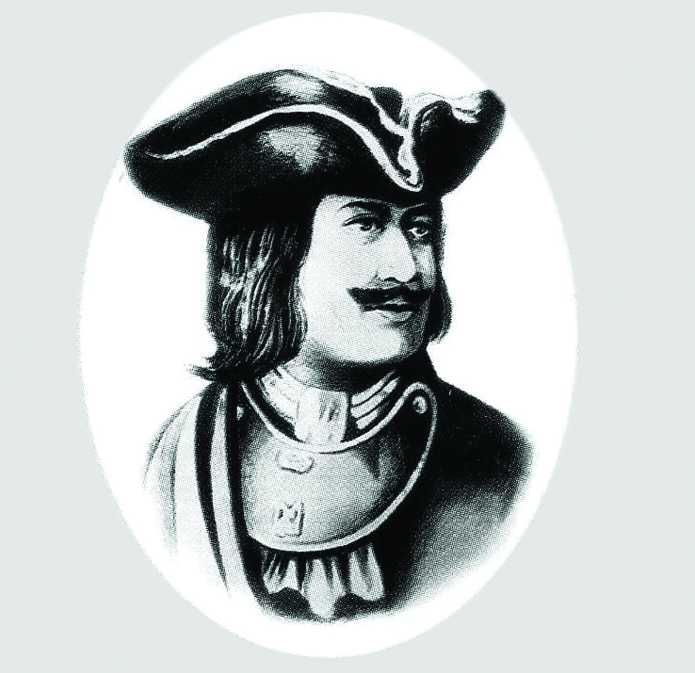

Практическая работа "Создание HTML-документов"
Некоторые интересные факты про информатику
Формирование информатики и ИКТ ИКТ - аббревиатура начало происходить в 20 веке , что было связано
с началом в развитии вычислительной техники. Современное понятие появилось в 60-х годах во
Франции и было принято решение дать название области знаний, в которой бы шла речь об
изучении обработки данных и электронно-вычислительной технике.
На данный момент информатикой является наука о способах накопления, преобразования, получения,
хранения, защите и передаче информации.
Первый программист
В современном обществе принято считать, что профессия программист больше подходит для
мужчин . Но первым в мире программистом была англичанка Ада Лавлейс.

В середине 19 века она смогла составить план прообраза электронно-вычислительной машины, при
использовании которой можно было решить уравнение Бернулли.
Дифференциальное уравнение Бернулли — это уравнение вида
y' + p(x)y = q(x)y n ,где n≠0, n≠1.
Это уравнение может быть преобразовано при помощи подстановки z=y 1-n в линейное
уравнение (1/(1-n))z’ + p(x)z=q(x).
Бит в байте
Первое использование на сегодняшний момент всем известного названия “байт” было применено
В. Бухгольцем в 1956 году при проектировании первого суперкомпьютера с целью одновременно
передаваемых в устройствах 6 битов.

В современном мире бит в байте уже 8 и вычисляется это по формуле Хартли:
N=2 i
Данная формула имеет другой вид:
i=log 2 N.
Первый смайл
Выглядела первая эмоция следующим образом -) . Автором смайла является Кевин Макензи , и он
был первым переданным электронным путем.
В настоящее время используется множество эмоджи (смайлов) , передающих различные эмоции:


О талисмане операционной системе Linux
Талисман в изображении пингвина появился еще до создания операционной системы Линусом
Торвальдсом.

Все началось с посещения зоопарка, где он был укушен пингвином. Подобное действие со стороны
животного стало одной из причин в выборе такого талисмана для операционной системы Linux

И
н
ф
О
р
М
а
т
и
к
а